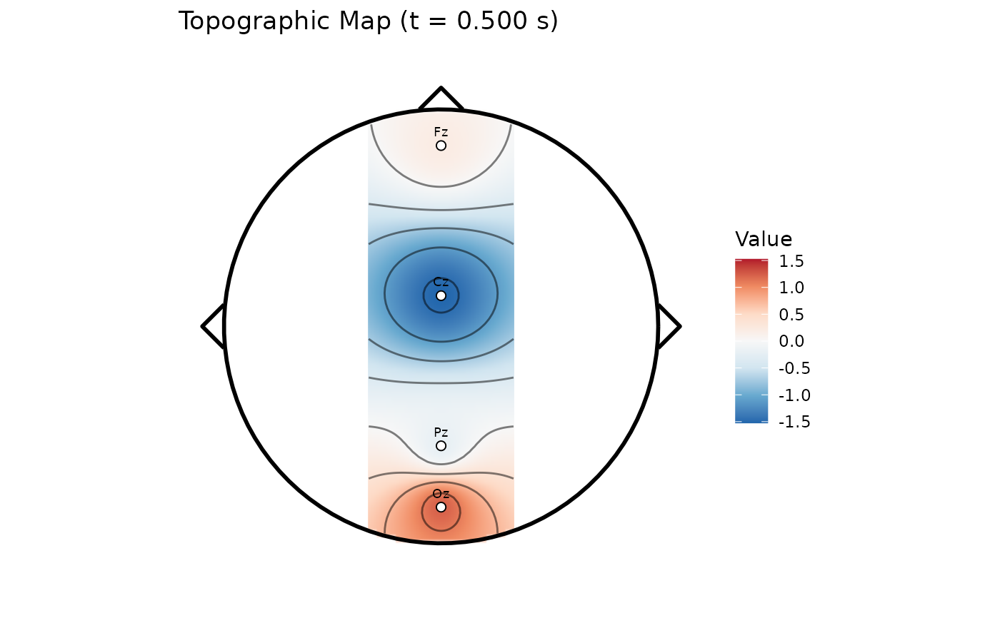
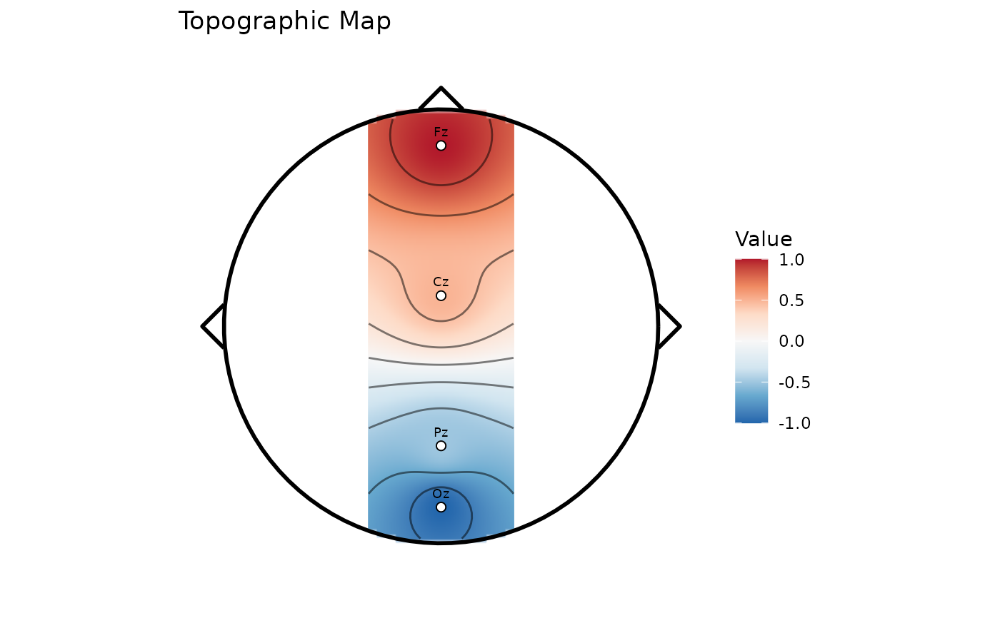

Functions for plotting scalp topography maps showing the spatial distribution of signal values across electrode positions. Plot topographic map (scalp topography)
Usage
plotTopomap(
x,
values = NULL,
time = NULL,
channel_values = NULL,
assay_name = NULL,
resolution = 100L,
contours = TRUE,
head_shape = TRUE,
electrodes = TRUE,
palette = "RdBu",
limits = NULL,
title = NULL,
interpolation = c("idw", "spline"),
spline_stiffness = 4L,
spline_terms = 50L,
spline_regularization = 0
)Arguments
- x
A PhysioExperiment object with electrode positions.
- values
Optional numeric vector of values to plot. If NULL, uses values from the specified time point.
- time
Time point in seconds to extract values (if values is NULL).
- channel_values
Named vector of channel values (alternative to values).
- assay_name
Optional assay name. If NULL, uses the default assay.
- resolution
Grid resolution for interpolation. Default is 100.
- contours
Logical. If TRUE, adds contour lines. Default is TRUE
- head_shape
Logical. If TRUE, draws head outline. Default is TRUE.
- electrodes
Logical. If TRUE, shows electrode positions. Default is TRUE.
- palette
Color palette name or vector of colors.
- limits
Numeric vector of length 2 for color scale limits.
- title
Plot title. If NULL, auto-generated.
- interpolation
Interpolation method.
"idw"preserves the Shepard inverse-distance-weighted default;"spline"uses Perrin spherical splines on an upper-hemisphere lift.- spline_stiffness
Positive integer of at least 2 controlling the spherical-spline kernel. Default is 4.
- spline_terms
Positive integer number of Legendre terms. Default is 50.
- spline_regularization
Non-negative diagonal regularization applied to the electrode kernel. The default 0 gives an interpolating spline; positive values improve conditioning but need not reproduce electrode values.
Details
Creates a 2D topographic map showing the spatial distribution of values across electrode positions on the scalp.
With interpolation = "idw", scalp values are interpolated by
inverse distance weighting (Shepard's method) with power 2. With
interpolation = "spline", planar montage coordinates are lifted to a
shared upper unit hemisphere and evaluated with the Perrin spherical-spline
kernel. This is spatial interpolation, not a surface Laplacian,
current-source-density estimate, reference transformation, or source
localization.
References
Shepard, D. (1968). "A two-dimensional interpolation function for irregularly-spaced data." Proceedings of the 1968 23rd ACM National Conference, 517-524. doi:10.1145/800186.810616
Perrin F, Pernier J, Bertrand O, Echallier J. (1989). Spherical splines for scalp potential and current density mapping. Electroencephalography and Clinical Neurophysiology, 72(2), 184-187. doi:10.1016/0013-4694(89)90180-6
See also
plotTopomapSeries() for topographic maps across time,
plotMultiChannel() for multi-channel signal visualization,
plotERP() for event-related potential plots.
Examples
# Create example with 10-20 electrode positions
pe <- PhysioExperiment(
assays = list(raw = matrix(rnorm(400), nrow = 100, ncol = 4)),
colData = S4Vectors::DataFrame(label = c("Fz", "Cz", "Pz", "Oz")),
samplingRate = 100
)
# Apply 10-20 montage to get electrode positions
pe <- applyMontage(pe, "10-20")
# Plot topographic map at time = 0.5s
plotTopomap(pe, time = 0.5)
#> Warning: Removed 1700 rows containing non-finite outside the scale range
#> (`stat_contour()`).
#> Warning: The following aesthetics were dropped during statistical transformation: fill.
#> ℹ This can happen when ggplot fails to infer the correct grouping structure in
#> the data.
#> ℹ Did you forget to specify a `group` aesthetic or to convert a numerical
#> variable into a factor?

# Plot with custom values
plotTopomap(pe, values = c(1, 0.5, -0.5, -1))
#> Warning: Removed 1700 rows containing non-finite outside the scale range
#> (`stat_contour()`).
#> Warning: The following aesthetics were dropped during statistical transformation: fill.
#> ℹ This can happen when ggplot fails to infer the correct grouping structure in
#> the data.
#> ℹ Did you forget to specify a `group` aesthetic or to convert a numerical
#> variable into a factor?
